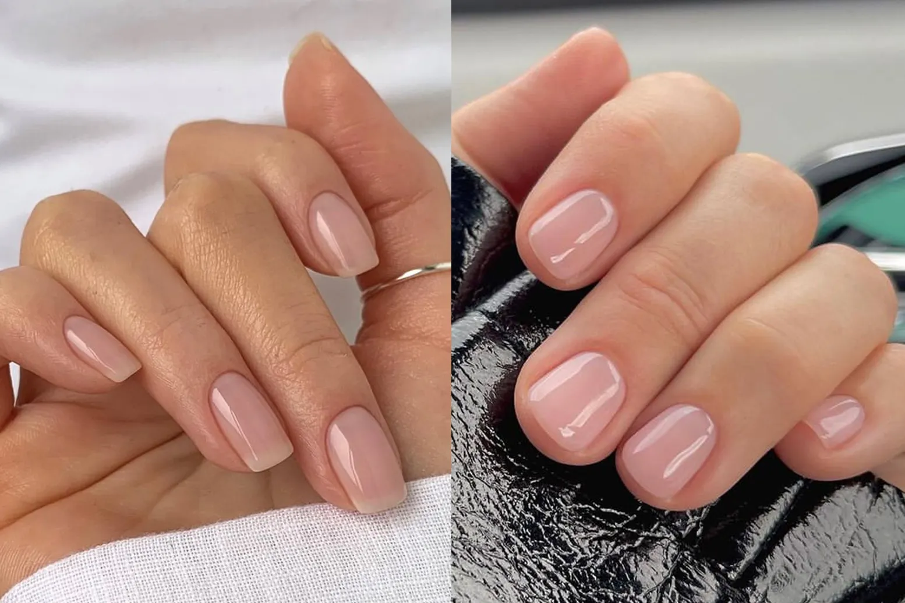
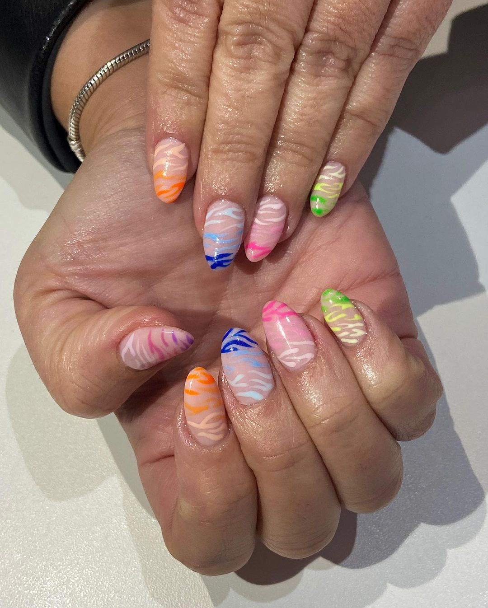
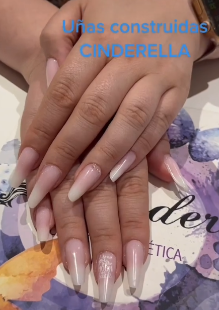
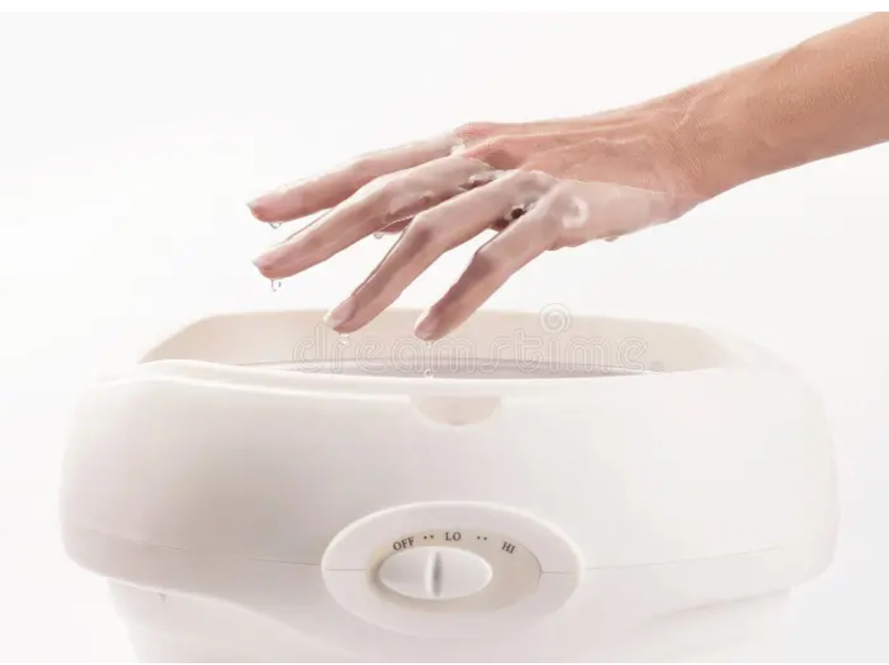
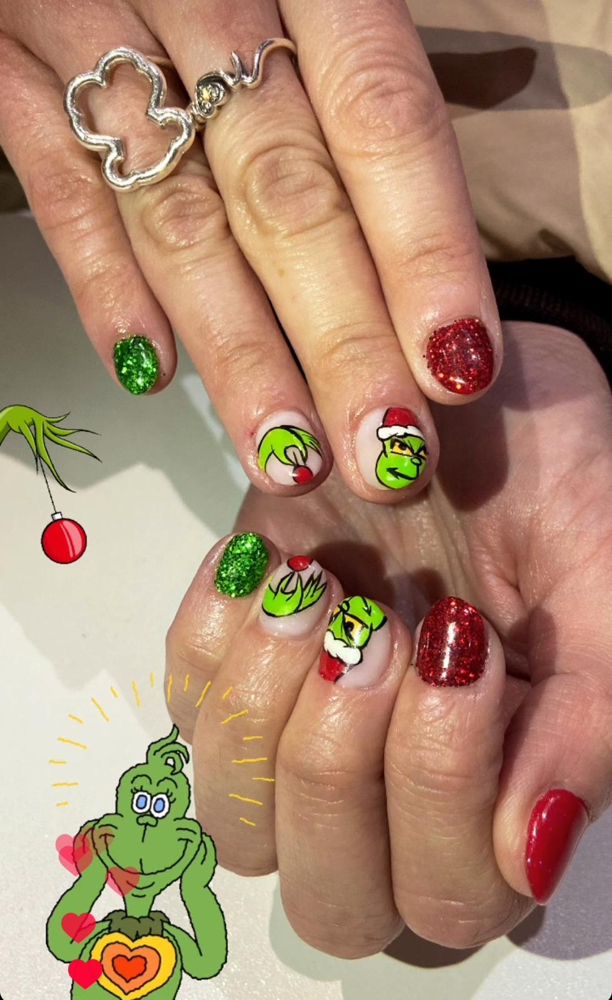
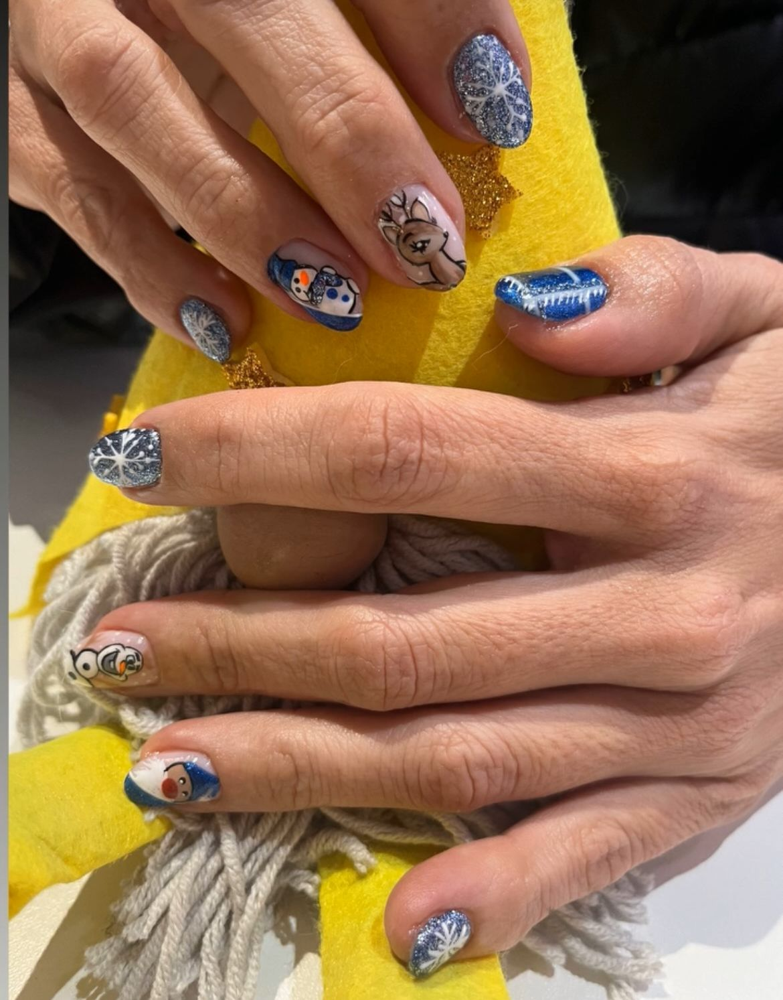
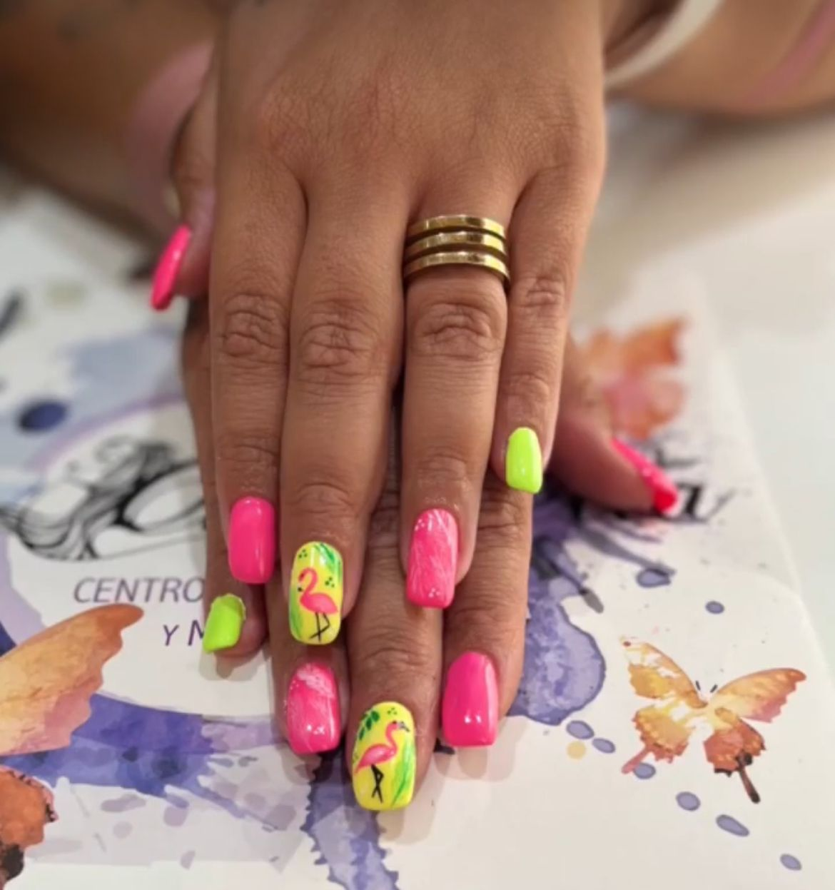
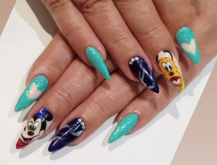

Manicura normal
Es la manicura que se hace sin esmaltado, se puede hacer tanto a hombres como mujeres.
Consiste en ensalzar la belleza de la mano, retirando cutícula, limando y cortando uña e hidratando mediante un masaje.
Nosotras no utilizamos esmaltes de secado al aire (esmalte normal) y si se quisiera sólo utilizaríamos un brillo

Manicura semipermanente
Es la manicura más demandada porque sale del centro completamente curada o seca y te permite hacer tu vida normal sin esperar a que se seque. Además, en nuestro centro contamos con una gran variedad de colores que, mezclados entre sí, hacen tu manicura diferente.
Utilizamos una base que cuida la uña natural y hace más duradero el esmaltado, dándonos un gran resultado en nuestros años de experiencia.
En este servicio incluimos la decoración sencilla de dos uñas.
Durante el año vamos haciendo cursos de reciclaje para estar a la última y también los impartimos.

Manicura construida

Utilizamos un producto llamado acrigel para construir uñas tanto de manera terapeutica como para alargar, y así embellecer la mano. De manera terapeutica, lo utilizamos como tratamiento para uñas mordidas, golpeadas o traumaticas.
Se puede hacer de diversas formas dependiendo de la largura deseada, con moldes, tips o pegada a la uña natural.
Parafina
Es un tratamiento rehabilitador que se hace en hospitales y centros de rehabilitación para mejorar los dolores derivados de artritis, artrosis, tendinitis y otros dolores articulares. En nuestro centro lo utilizamos además para conseguir una gran hidratación de la piel tanto de manos como de pies.
Además de aportar un calor agradable, su aplicación hace que esa sensación se mantenga durante unas horas más.

Decoraciones especiales
Distinguimos nuestras manicuras porque siempre decoramos a mano alzada, con pinceles y productos específicos para ello, y a veces nuestras clientas más caprichosas nos piden con bastante antelación diversos dibujos con alta dificultad que realizamos con mucho agrado. Esto requiere más tiempo que otras manicuras y más tranquilidad por parte de la clienta, quedando manicuras diferentes y tan lindas como las que vas a ver a continuación:



